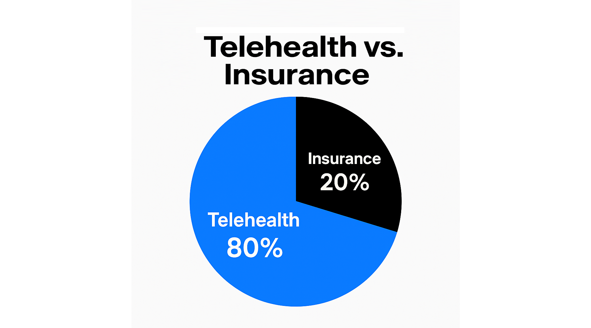

You've been paying for the wrong door.
Telehealth Is the Answer
to the Affordability Crisis
$600 a year covers 80% of what Americans actually need. Congress has the authority to make it happen. PHIERS is building the pressure to force them to act.
of Americans never use hospitalization or specialty care — yet pay $10,000/yr for insurance built around it
covers all routine care via telehealth — 24/7 access, no gatekeepers, no prior authorization, no denials
the cost of traditional insurance — same care, direct access, without the middleman taking the margin
from Congressional authorization to universal coverage — Congress already has the authority under the ACA
Why Insurance Became the Problem
Insurance was designed for one thing: rare, catastrophic events. Hospitalizations. Surgeries. Emergency trauma. The kind of crisis that happens once or twice in a lifetime — but costs a fortune when it does.
Somewhere along the way, it became the front door to all care. Routine visits. Prescription refills. Mental health. Preventive checkups. Things that have nothing to do with catastrophe — now routed through a system built for catastrophe.
That mismatch is why costs exploded. When you price routine care like it's a surgery, routine care costs like a surgery.
80% of what Americans actually need is basic, everyday care. Insurance companies charge $10,000 a year to process that care — adding prior authorizations, billing codes, network restrictions, and claim denials along the way. Not because it makes care better. Because it makes them money.
The front door costs $10,000/year. Most people only ever needed a $600 door.
What Telehealth Actually Does
Telehealth is direct care — no middlemen, no prior authorization, no billing codes, no network restrictions, no claim denials.
It covers everything people actually use day to day:
- Primary care & urgent care
- Mental health & counseling
- Chronic disease management
- Prescription refills
- Preventive care
- Basic labs & care navigation
Available 24/7. No waiting rooms. No referrals. No networks. Just care.
Telehealth delivers 80% of healthcare needs at roughly 1/14th the cost of insurance. That's not a tweak to the system. That's a different system entirely.

The cost difference is staggering — and it's exactly why the insurance industry lobbies to keep telehealth off the ACA Exchange.
The 80/20 Model: Separate Care from Catastrophe
Insurance is still necessary — for the 20%. Hospitalizations, surgeries, major emergencies. Those events are rare, but ruinously expensive when they happen. Insurance is the right tool for that job.
PHIERS doesn't eliminate insurance. It puts insurance back where it belongs.
The model is simple:
📱 Telehealth — The 80%
Everyday care. $600/yr. Direct access. No gatekeepers. Available to everyone, everywhere, now.
- Primary & urgent care
- Mental health
- Chronic conditions
- Prevention & prescriptions
🏥 Insurance — The 20%
Catastrophic backstop. Lower cost because it's no longer carrying the weight of routine care.
- Hospitalization
- Surgery
- Emergency trauma
- Long-term rehab
When you stop using a sledgehammer for everything, a lot of things get cheaper.

Telehealth handles everyday care. Insurance protects against catastrophe. Together: universal, affordable coverage.
The Savings Cascade
When telehealth handles the 80%, the entire system gets cheaper — automatically and at every level:
- ✓ ER visits drop — people stop using emergency rooms for basic care
- ✓ Hospital readmissions drop — chronic conditions managed before they escalate
- ✓ Insurance claims drop — fewer crises mean fewer catastrophic claims
- ✓ Premiums drop — insurers pay out less, charge less
- ✓ Medicaid & Medicare costs drop — public programs stabilize
- ✓ ACA subsidies drop — government spends less to cover the same people
At national scale: roughly $2.7 trillion a year freed from a system that was never designed to deliver what it's being asked to deliver.
That money doesn't disappear. It goes back to workers, employers, unions, communities — and the public budget.
Why Congress Hasn't Done This Already
It's not because they don't know. They know.
The insurance industry spends hundreds of millions of dollars a year lobbying Congress to protect the current system. Pharmaceutical companies do the same. Together, they are among the most powerful lobbying forces in Washington — and the current system makes them extraordinarily wealthy.
A $600 telehealth benefit on the ACA Exchange threatens that wealth directly. It shrinks their market, reduces their margins, and hands control back to patients. That's exactly why it hasn't happened.
Congress has full authority under the ACA to expand covered benefits right now. No constitutional amendment. No Supreme Court approval. They can vote on this tomorrow.
They haven't — because nobody has made the political cost of inaction higher than the lobbying money they're protecting.
That's what PHIERS changes.
The One Demand
PHIERS's ask is specific, simple, and impossible for Congress to misunderstand:
Add $600/year telehealth as a covered benefit under the ACA Exchange and CMS.
That single change makes telehealth available to every American — and triggers the savings cascade that stabilizes the entire system within 8 to 13 months of authorization.
Not a bill that takes five years. Not a new agency. One covered benefit. One vote. Universal coverage starts rolling.

This is what good healthcare actually looks like — delivered directly, without the middleman extracting the margin.
This Fix Unlocks Everything Else
Healthcare is not just a health issue. It's the financial foundation everything else is built on.
When employers stop carrying crushing benefit costs, they can raise wages and hire more people. When unions stop spending bargaining power defending benefits, they can fight for better conditions. When families stop choosing between a doctor visit and a rent payment, they build stability instead of managing crisis.
The $2.7 trillion in annual savings doesn't just fix healthcare — it funds the rest. Infrastructure. Manufacturing. Veterans' care. A stronger safety net. An economy that works for the people paying into it.
And once PHIERS proves it can deliver on healthcare, that same organized constituency has leverage over Congress on every issue that follows — including ending unauthorized wars that cost over $1 billion a day while the people who fund them go without care.
Telehealth is care.
Insurance is protection.
PHIERS is the system that finally combines them.
Once you separate care from catastrophe, the math becomes simple — and universal coverage becomes possible.
Independent Validation
These organizations examined the PHIERS framework and engaged — independently, without coordination.
Letter of support for PHIERS approach to healthcare stabilization
Formal recognition of cooperative telehealth delivery model
Independent validation of the cost-elimination model — operational since 2022 at scale
Cooperative telehealth delivery for unions, gig workers, and veterans — already working
Multi-faith organizational support for community-based healthcare access
Chenoweth research: no movement reaching 3.5% participation has ever failed to achieve its goal
The Only Thing Missing Is You
Telehealth works. The model is validated. The math is undeniable. Congress has the authority.
What it needs is documented public pressure — and that starts with your name on the record.